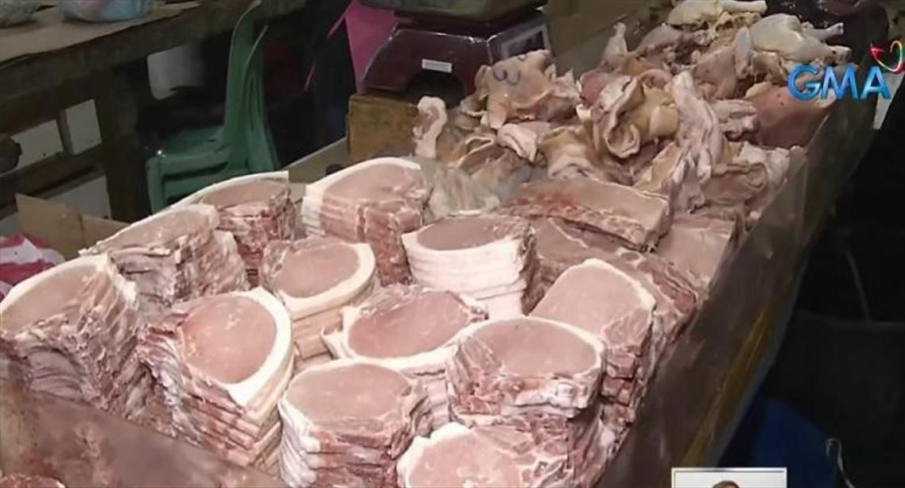

Daily
Fire on the earth, and a love beyond knowing. Hot midday, afternoon shower chance, Rosal watch. The Way 1.
Word: kindle. Luke 12, not peace but division. Pope Leo XIV on staying faithful to the truth in love.
Headlines
Nigeria reports its first Ebola case in a decade. Georgia’s court weighs banning the opposition. Trump presses Zelenskiy to settle.
Eala meets Shnaider today in Ningbo. A quiet Para Games Wednesday. Rosal shuts Batanes schools. Palace will not block the envoy resolutions.

Food Desk
DA says 170 days of pork means no Christmas spike, while Rosal puts 626,000 hectares of rice and corn on watch
Today’s Food Desk.